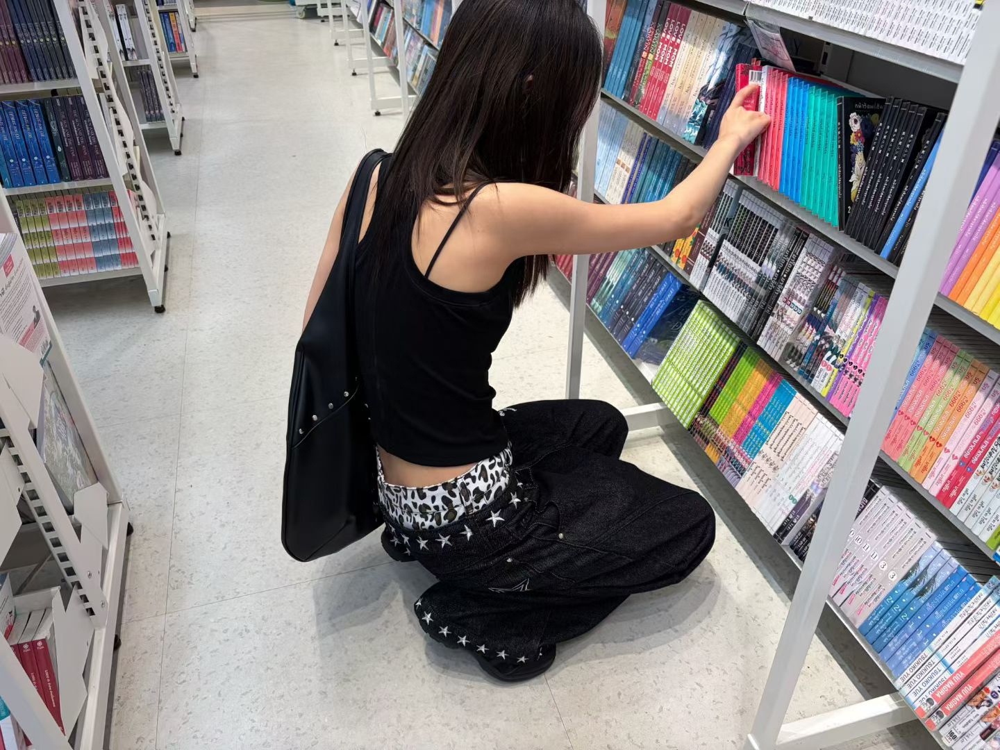
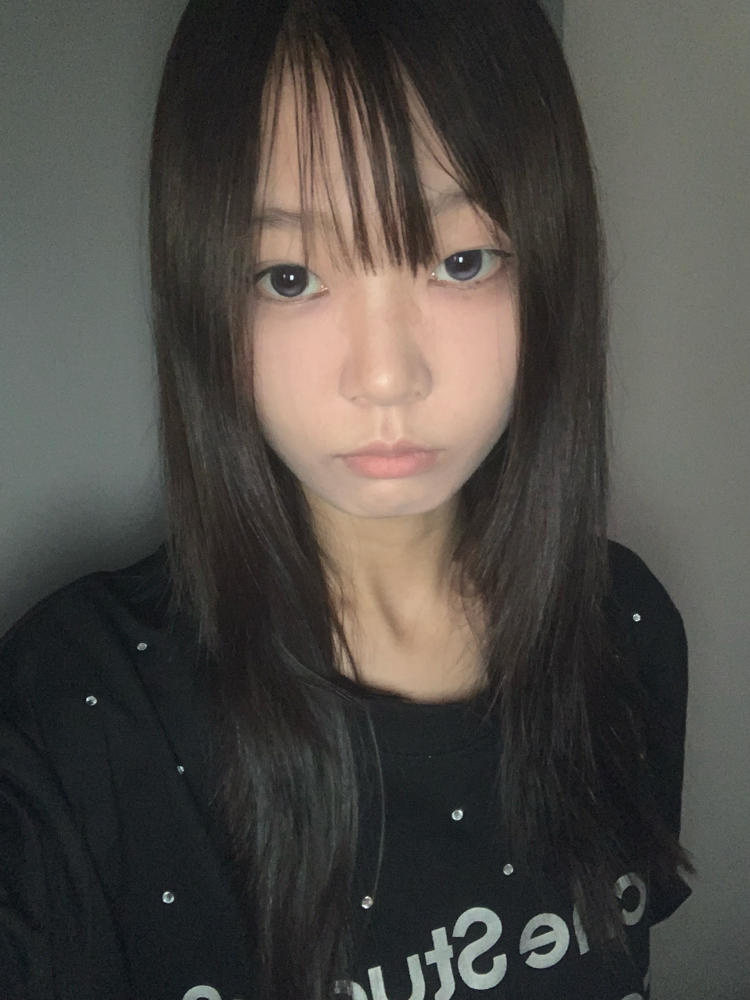

2026.09 — 2026.11
杭州指数跃迁科技有限公司
SEO 内容营销
围绕 AI 工具与开发者工作流研究英文选题，查阅产品文档、行业资料和目标刊物；用 AI 辅助起稿、调整结构，再逐项核验产品功能、版本差异与引用。制作文章配图，负责 Medium 排版发布、英文 Publication 投稿跟进，以及作者账号的内容排期。
查看相关工作 ↗ABOUT / DARIA YU
我的名字是俞汉妮，英文名 Daria Yu，国际商务专业背景。过去的工作涉及海外市场拓展、客户沟通、CRM 流程整理，以及英文科技内容的研究、制作、审校和发布。工作之外，我也会围绕感兴趣的品牌和市场问题开展独立研究。CARRY/On 收录了其中一部分工作和项目。


2026.09 — 2026.11
SEO 内容营销
围绕 AI 工具与开发者工作流研究英文选题，查阅产品文档、行业资料和目标刊物；用 AI 辅助起稿、调整结构，再逐项核验产品功能、版本差异与引用。制作文章配图，负责 Medium 排版发布、英文 Publication 投稿跟进，以及作者账号的内容排期。
查看相关工作 ↗2025.08 — 2026.04
海外市场运营实习生 · 阿联酋市场
通过 TikTok、WhatsApp 等渠道接待海外客户，分类需求并维护跟进记录；与客户、供应商及国内团队同步报价、交期和需求变化，参与样品寄送与订单推进。也参与 CRM 落地、客户信息标准化表单及同步流程的整理。
查看相关工作 ↗2025.03 — 2025.06
参与国际市场资料调研、产品定位分析、英文展示和模拟商务谈判；团队获得全国一等奖。
2024.01 — 2024.06
参与线下客流观察、竞品调研和资料整理，负责答辩 PPT 的内容结构与视觉优化；项目获得全国三等奖。
2022.09 — 2026.06
国际商务 · 本科
市场研究与公开资料分析
海外客户沟通与 CRM 信息整理
英文内容研究与编辑
Excel、PowerPoint
ChatGPT、Gemini
Python、SQL 基础
国际化产品运营、市场研究、GTM 与内容运营。个人兴趣项目里，我会把品牌叙事和市场问题做成可检验、可展示的研究。
从小对心理学感兴趣，习惯性在生活中研究分析，擅长拉架和解决朋友的心事。
喜欢看电影、动漫，也追星。喜欢的作品有《全职猎人》《JOJO的奇妙冒险》《心理测量者》；盖·里奇导演的作品全认可。
CONTACT
微信与电话同号。